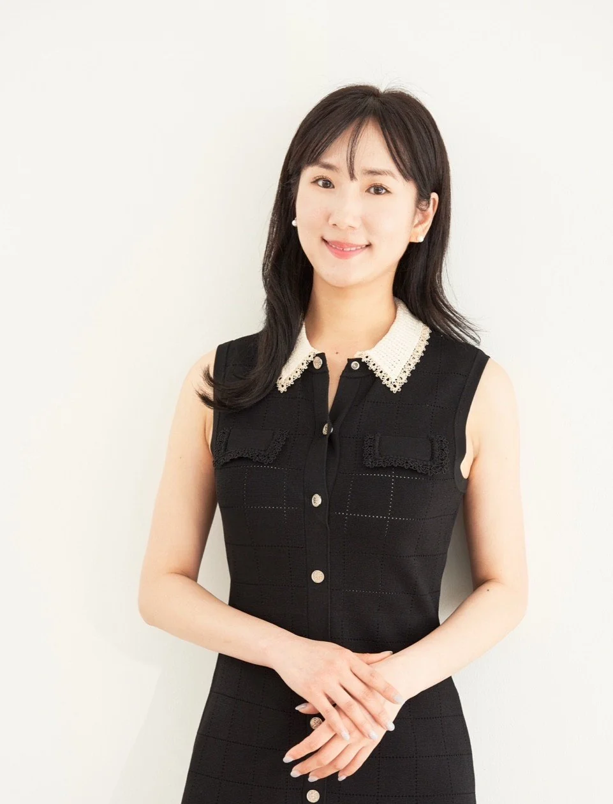
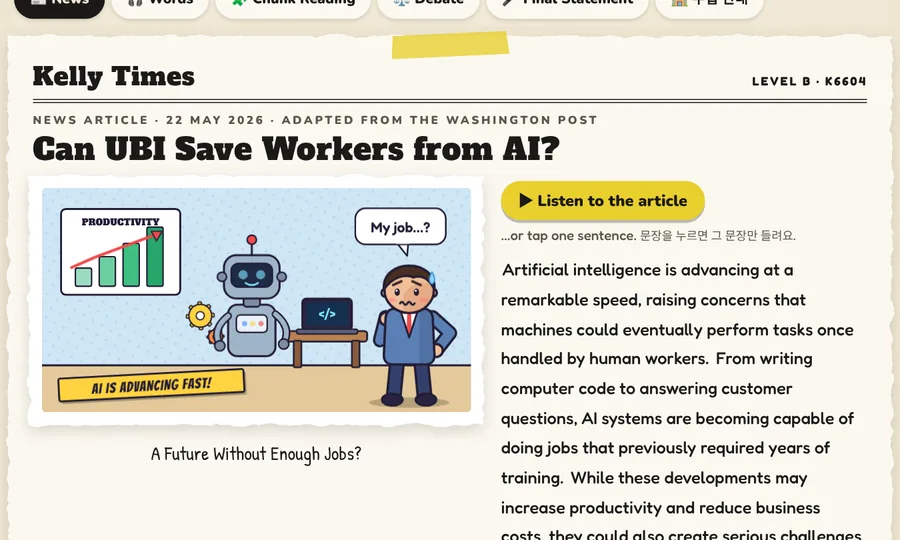

Level P
초등 1학년부터Phonics First, Reading Fast!
- 읽기
- Phonics Story Books파닉스 스토리북
- 쓰기
- Picture Summary그림 요약
- 문법
- Level A부터 시작합니다
- 구성
- 다독 · 정독 · 퀴즈세 가지 라인
- 시간
- 60분초등 저학년· 90분
- 파닉스부터 스토리북까지, 원서로 재미있게 읽습니다.
- 선생님과 1:1로, 아이 속도에 맞춰 진행합니다.
- 알파벳을 따라 쓸 수 있으면 시작할 수 있습니다.

켈리 원장
Level P부터 Level D까지, 다섯 단계로 올라갑니다.
책등을 하나씩 눌러 보세요! 단계마다 읽기 · 쓰기 · 문법과 북리포트 예시가 열립니다.
Phonics First, Reading Fast!
그림책을 읽고, 줄거리를 짧게 씁니다.
챕터북으로 넘어가고, 요약이 길어집니다.
줄거리 요약에서, 내 의견 쓰기로.
소설과 논픽션을 읽고, 에세이를 씁니다.
모든 수업은 1:1 맞춤으로 진행하고, Speaking 훈련이 함께 이루어집니다. 아이의 현재 위치는 3개월에 한 번, 전 원생이 함께 보는 SR TEST로 확인합니다.
KELLY GRAMMAR SYSTEM
5단계 레벨로 나눈 문법 수업을 1년에 세 번, 3개월씩 집중해서 진행합니다. 7월과 12월에는 다양한 특강으로 독서 수업에서 다룰 수 없었던 영역의 역량을 집중적으로 키웁니다.
아이의 현재 수준에 맞는 반에서 시작해, 한 단계씩 차근차근 올라갑니다.
필수 역량 강화
토론 · 발표 · 영자신문
새 학기 준비
영어 듣기 · 구문독해 · 수행평가
독서 수업이 아이의 생각을 글과 말로 살피는 정성 평가라면, 문법 수업은 같은 시험지로 실력을 숫자로 확인하는 정량 평가입니다.
Before Test첫 수업 · 진단
70점
3개월 수업배우고 · 정리하고
3개월 동안 수업으로 새로운 문법을 배우고, 틀린 문제는 왜 틀렸는지 정리하며 실력을 쌓습니다.
After Test12주 · 마지막 수업
100점
70→100+30점
* 점수는 이해를 돕기 위한 예시입니다.
학부모님께 보내 드리는 1분 안팎의 영상을 한곳에 모았습니다.
영상 속 목소리는 AI 음성입니다.
책마다 직접 설계한 퀴즈로, 아이의 독해력과 이해도를 꼼꼼하게 확인합니다.

Phonics → Phonics Story Book (다독)
PhonicsNow I’m Reading 1 · Hot Dog
Phonics Story Book · 다독ORT 5 · A New Classroom
A 다독 라인 + A 퀴즈 라인
A 다독 라인Pete the Cat · Scaredy Cat / Family Road Trip
A 퀴즈 라인Fly Guy · Fly Guy and the Frankenfly
B 정독 라인 + 비문학 독해
B 정독 라인The Charles Dickens Easy Classics · Oliver Twist
비문학 독해Reading Practice · How Banks Work
C 정독 라인 + 비문학 독해
C 정독 라인Greek Myths · The Adventures of Odysseus
비문학 독해경제 · 과학 · 기술 · 생물 등 다양한 주제
화면에서 직접 움직이고 고르며 풀어 보는 디지털 워크시트를 만들고 있습니다. 개발 중인 체험판을 미리 열어 보세요.

한 명은 아무것도 안 했는데 모두 100점, 공정할까요?

기본소득은 AI로부터 일하는 사람들을 지켜 줄 수 있을까요?
개발 중인 체험판으로, 수업에서 쓰는 워크시트의 일부입니다. 두 LAB 모두 소리가 나며, 음성은 AI 음성입니다.

“아이마다 속도는 달라도, 성장의 깊이는 놓치지 않습니다.”
아이가 혼자서도 영어책을 읽고 이해하는 힘을 기르는 것이 켈리의 목표입니다.
켈리영어독서학원은 2018년 산본에 문을 열었습니다. 원장 선생님을 닮은 캐릭터 ‘켈리콩’은 학원 소식 영상과 숙제 알림에 등장합니다.
이모티콘을 누르면 크게 볼 수 있습니다.
여기에 없는 내용은 상담 때 편하게 물어봐 주세요.
켈리는 학년별로 같은 책과 진도를 일괄 적용하지 않습니다. 같은 학년이라도 영어 수준과 읽는 속도, 집중력, 학습 습관이 모두 다르기 때문입니다.
아이 한 명 한 명의 수준과 속도에 맞춰 1:1로 학습을 진행합니다. 책을 읽고 이해하는 데 시간이 필요한 아이는 충분히 익힐 수 있도록 돕고, 준비가 된 아이는 다음 단계로 나아갈 수 있도록 안내합니다.
책의 난이도와 진도뿐 아니라 아이의 학습 습관과 보완할 부분까지 세심하게 살피며, 스스로 읽고 생각하는 힘을 키워 갑니다.
책을 읽으면 다양한 문장과 표현을 만나며 영어의 감각을 쌓을 수 있습니다. 여기에 문법의 원리를 배우면, 익숙하게 접했던 문장을 더 정확하게 이해하고 직접 활용하는 데 도움이 됩니다.
그래서 켈리는 원서 읽기와 문법 학습을 연결합니다. 책에서 만난 표현을 문법으로 정리하고, 배운 문법을 글쓰기와 말하기에 적용하도록 돕습니다.
학교별 시험 범위에 맞춘 별도의 내신 대비 수업은 운영하지 않습니다. 대신 평소 원서 읽기와 문법 학습을 통해 학교 시험의 바탕이 되는 어휘력, 정확한 문장 이해력, 서술형 표현력을 차근차근 쌓습니다.
직접 제작한 퀴즈와 글쓰기 활동에서도 답의 근거를 찾고, 문장을 분석하며, 자신의 생각을 영어로 정리하는 연습을 합니다. 켈리의 목표는 아이가 배운 것을 스스로 이해하고 활용하며, 시험 공부도 주도적으로 해낼 수 있는 힘을 기르는 것입니다.
| 수업 횟수 | 수업 시간 | 월 수강료 |
|---|---|---|
| 주 3회 | 회당 90분 | 28만 원 |
| 주 4회 | 회당 90분 | 31만 원 |
| 주 5회 | 회당 90분 | 33만 원 |
레벨과 수업 구성에 따라 수업 시간 및 수강료가 달라질 수 있습니다. 상담 시 아이에게 맞는 과정과 수강료를 자세히 안내해 드립니다.
카카오톡 채널 ‘켈리영어독서학원’ 또는 010-9892-4088로 편하게 문의해 주세요. 😊
아이의 영어 학습 경험과 현재 고민을 들려주시면, 앞으로 어떤 방향으로 공부하면 좋을지 함께 살펴보겠습니다.
수업 중에는 바로 응대하기 어려울 수 있습니다. 카카오톡이나 문자로 문의를 남겨 주시면 확인 후 안내해 드리겠습니다.
아이 학년과 궁금한 수업을 고르면 보낼 메시지가 만들어집니다. ‘카카오 채널톡으로 상담하기’를 누르면 메시지가 복사되고 채팅창이 열려요. 붙여 넣어 보내 주세요.
학부모님들의 생생한 후기와 수업 소식을 먼저 읽어 보세요.

궁금한 점은 편하게 물어봐 주세요.